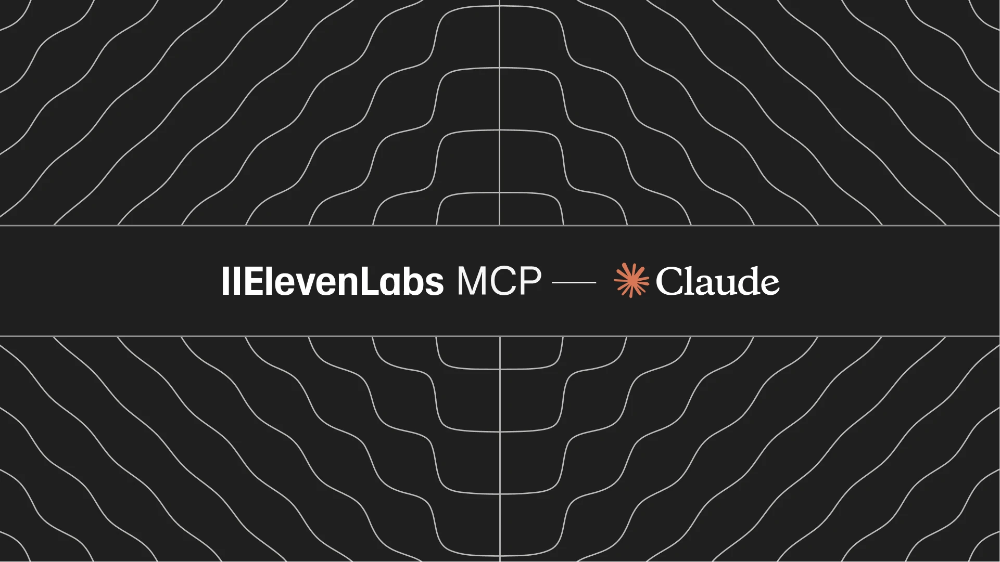

Threads｜Kufu 酷服：ElevenLabs Hosted MCP 進 Claude，可管理語音與聊天 Agent

一句話摘要
ElevenLabs Hosted MCP 已進入 Claude connector 生態：連接後可在 Claude 裡用自然語言管理 ElevenLabs 的 voice / chat agents，包括建立、更新設定、查看對話、分析主題、複製 agent，甚至先估算變更後的 LLM 使用量與成本。
為什麼保存
這則 Threads 很適合收進 AI 學習雷達，因為它代表 MCP 從「本機工具橋接」進一步走向「SaaS 官方託管 connector」。對 AI 客服、語音 agent、Claude 工作流與企業權限治理而言，重點不只是多一個工具，而是 agent 管理介面開始被搬進使用者已經在工作的 AI assistant 裡。
來源脈絡
- Threads 作者：Kufu 酷服｜AI 智能客服平台（@kufutw）
- Threads 重點：ElevenLabs 新版 MCP Connector 上線，可在 Claude 裡直接管理語音與聊天 Agent，並可先估算改設定前後的 LLM 成本。
- 官方 blog：Introducing the ElevenLabs MCP, now available in Claude
- 官方文件：Hosted MCP server｜ElevenLabs Documentation
- 發布時間：ElevenLabs blog 標示 2026-08-17
官方功能整理
ElevenLabs 官方文件描述 Hosted MCP server 是遠端 Model Context Protocol server，端點為：
```text
https://api.elevenlabs.io/v1/mcp
```
連接後，Claude 或其他 MCP client 可透過自然語言執行：
- 建立新的 ElevenAgents。
- 更新 agent 設定，例如 system prompt、voice、language、first message。
- 列出 agent，檢查或比較不同 agent 的設定。
- 查看近期對話與完整 transcript。
- 探索 agent 對話涵蓋的主題。
- 複製或刪除 agents。
- 變更上線前估算預期 LLM usage 與 cost。
- 取得 agent widget configuration 與 shareable link。
- 查看 agent knowledge base 大小。
- 從文字產生 speech audio，回傳短效下載連結。
連接方式
官方文件提到 Hosted MCP 已發布在 Claude Desktop directory：
- 在 Claude Desktop 開啟 Settings > Connectors。
- 搜尋 ElevenLabs connector 並點選 Connect。
- 透過 OAuth 登入 ElevenLabs account。
- Claude 即可代表使用者列出、建立與更新 workspace 內的 agents。
權限與安全重點
- 使用 OAuth 授權，不需要把 API key 複製到 client。
- Hosted MCP 由 ElevenLabs 託管，因此不需要本機跑 server 或維護外部服務。
- 連線可從 MCP client 或 ElevenLabs account settings 撤銷。
- Claude 內也可用 connector / tool controls 管理可用工具範圍。
- ElevenLabs 2025 年推出的本機 MCP server 仍可用，較適合需要 API key 與本機開發流程的 developer workflows。
對 AI 客服與語音 Agent 的意義
- 產品營運人員可直接在 Claude 中檢查 agent 表現、調整 prompt / voice / first message，降低進後台操作的摩擦。
- 成本估算進入變更前流程，有助於把 LLM cost 納入發布決策，而不是事後看帳單。
- 對多市場或多語系客服情境，複製 agent 後調整 voice 與 first message 是很實用的 workflow。
- MCP connector 讓「管理 agent」本身也變成 agent 可操作的工作，後續可和報表、客服知識庫、CRM 或部署流程串起來。
實用提醒
這類 connector 具備建立、更新、複製、刪除 agent 的能力，適合先用 staging / duplicate agent 測試；正式環境建議保留 human approval、版本紀錄與變更前後測試，避免把聊天視窗中的確認誤當成完整部署驗證。
原始連結
Threads：
https://www.threads.com/@kufutw/post/DcK7-cUnbmk
ElevenLabs blog：
https://elevenlabs.io/blog/elevenlabs-mcp-in-claude
官方文件：